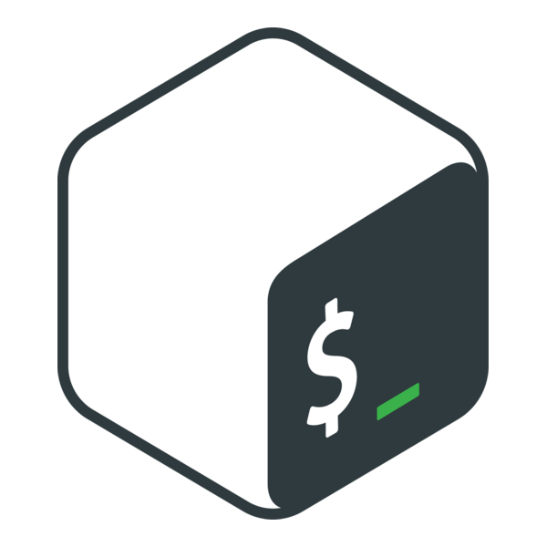

Shell configuration
Customize your terminal with dotfiles, environment variables, aliases, and Homebrew packages. Learn how your shell reads configuration files and how to make changes that persist.
Overview
Every time you open a terminal, your shell reads a set of configuration files before showing you a prompt. These files control how the shell behaves — what shortcuts are available, which programs it can find, and how the prompt looks. This tutorial explains how to edit those files, set environment variables, create aliases, and install a full set of recommended tools with Homebrew.

Prerequisites: Working with the filesystem
What are dotfiles?
In the previous tutorial you learned that are hidden files whose names start with a period. Many of the most important dotfiles are configuration files — plain text files that programs read at startup to learn your preferences.
Common dotfiles you will encounter:
| File | Used by |
|---|---|
~/.zshrc |
Zsh shell configuration |
~/.bashrc |
Bash shell configuration |
~/.gitconfig |
Git settings (name, email, editor) |
~/.config/ |
Directory for application configs |
These files live in your home directory. Because they start with a dot, ls hides them unless you use ls -a.
Shell startup files
When you open a terminal, your shell runs a — a script that sets up your environment. Which file it reads depends on your shell:
| Shell | Startup file |
|---|---|
| Zsh (macOS default) | ~/.zshrc |
| Bash (Linux/WSL default) | ~/.bashrc |
You may also see files like ~/.zprofile or ~/.bash_profile. These run for login shells (the first shell started when you log in). For the purposes of this workgroup, focus on .zshrc or .bashrc — they handle interactive sessions, which is what you get when you open a terminal window.
Editing your config file
You can edit your shell config with any text editor. nano is a simple terminal-based editor that is available on all systems:
nano ~/.zshrcInside nano:
- Type or paste text normally
- Ctrl + O to save (then press Enter to confirm the filename)
- Ctrl + X to exit
If you have Visual Studio Code installed, you can open the file in a graphical editor instead:
code ~/.zshrcBefore editing any config file, make a backup:
cp ~/.zshrc ~/.zshrc.backupIf something goes wrong, you can restore it:
cp ~/.zshrc.backup ~/.zshrcApplying changes with source
After editing your config file, the changes do not take effect automatically — your current shell session already ran the old version at startup. You have two options:
- Open a new terminal window (it will read the updated file)
- Use the command to re-read the file in your current session:
source ~/.zshrcFor Bash users:
source ~/.bashrcEnvironment variables
are key-value pairs that programs read to learn about your system and preferences. You can see all current environment variables with:
envTo see the value of a specific variable, use echo with a $ prefix:
echo $HOME/Users/janeSetting a variable
To create or change an environment variable for the current session:
MY_NAME="Jane"
echo $MY_NAMEJaneThis variable only exists in your current shell. To make it available to programs you launch from this shell, use :
export MY_NAME="Jane"To make a variable persist across sessions, add the export line to your shell config file (~/.zshrc or ~/.bashrc).
The PATH variable
is the most important environment variable. It tells the shell where to look for programs when you type a command.
echo $PATH/opt/homebrew/bin:/usr/local/bin:/usr/bin:/bin:/usr/sbin:/sbinThe output is a list of directories separated by colons. When you type a command like brew, the shell searches these directories from left to right until it finds a program with that name. If the program is not in any of the PATH directories, you get a “command not found” error.
This is why the Homebrew installer asked you to add a line to your config file — it needed to put Homebrew’s directory (/opt/homebrew/bin on macOS, /home/linuxbrew/.linuxbrew/bin on Linux) into your PATH.
Adding a directory to PATH
To add a directory to PATH, add a line like this to your config file:
export PATH="/some/new/directory:$PATH"The $PATH at the end preserves the existing directories. New directories go at the beginning so they are searched first.
If Homebrew is not working after installation, this is most likely the fix. Add the appropriate line for your system:
For Zsh on macOS:
echo 'eval "$(/opt/homebrew/bin/brew shellenv)"' >> ~/.zshrcFor Bash on Linux:
echo 'eval "$(/home/linuxbrew/.linuxbrew/bin/brew shellenv)"' >> ~/.bashrcThen apply the change:
source ~/.zshrc # or source ~/.bashrcOther useful variables
| Variable | What it stores |
|---|---|
HOME |
Your home directory path |
EDITOR |
Your preferred text editor (e.g. nano, vim, code) |
SHELL |
The path to your current shell program |
USER |
Your username |
To set a default editor, add this to your config file:
export EDITOR="nano"Aliases
An is a shortcut — a custom name for a command or series of commands. You define aliases in your shell config file so they are available every session.
Creating an alias
The syntax is:
alias shortcut='command'For example, a shortcut to go up one directory:
alias ..='cd ..'Now typing .. at the prompt runs cd ...
Temporary vs persistent aliases
If you type an alias directly at the prompt, it lasts only until you close the terminal. To make it permanent, add the alias line to ~/.zshrc (or ~/.bashrc) and run source to activate it.
Alias chaining
An alias can reference another alias. For example, suppose you create a base alias for eza (a modern replacement for ls) with colorized output:
alias ls='eza --icons=auto --color=auto'You can then build on it:
alias la='ls -a' # all files, including hidden
alias ll='ls -l' # long format with details
alias lla='ls -la' # both hidden and detailedSince la uses the ls alias, it inherits the --icons=auto --color=auto flags automatically.
Practical alias examples
Navigation:
alias ..='cd ..'
alias ...='cd ../..'
alias c='clear'Safety (ask before overwriting or deleting):
alias cp='cp -i'
alias mv='mv -i'
alias rm='rm -i'Tool replacements (once installed via Homebrew):
alias cat='bat'
alias ls='eza --icons=auto --color=auto'Using aliases is highly individualized. As you use the CLI more, you will develop your own collection of shortcuts tuned to your workflow.
Working with Homebrew
You installed in the CLI fundamentals tutorial. Now let’s learn how to use it effectively.
Formulae vs casks
Homebrew distinguishes two types of packages:
- Formulae — command-line tools and libraries installed in the terminal (e.g.
python,git,eza) - Casks — desktop applications with a graphical interface (e.g.
visual-studio-code,iterm2)
Common brew commands
Install a formula:
brew install <package_name>Install a cask (desktop app):
brew install --cask <package_name>Update Homebrew and upgrade all installed packages:
brew update && brew upgradeRun brew update && brew upgrade every few weeks to keep your tools current.
Search for a package:
brew search <query>View details about a package:
brew info <package_name>List everything you have installed:
brew listUninstall a package:
brew uninstall <package_name>Recommended packages
Here are packages organized by purpose. Install any of them with brew install <name>.
Development tools
| Package | Description |
|---|---|
uv |
Fast Python package and environment manager |
node |
JavaScript runtime (needed for some tools) |
npm |
JavaScript package manager (comes with Node) |
Enhanced commands
These replace built-in commands with modern alternatives that have better defaults, color output, and additional features.
| Package | Replaces | What it adds |
|---|---|---|
eza |
ls |
Icons, color, Git status in file listings |
bat |
cat |
Syntax highlighting, line numbers, Git integration |
fd |
find |
Simpler syntax, faster, respects .gitignore |
Productivity
| Package | Description |
|---|---|
thefuck |
Suggests corrections for mistyped commands |
tldr |
Simplified help pages with practical examples |
ncdu |
Interactive disk usage analyzer |
yazi |
Terminal file browser with previews |
lazygit |
Terminal UI for Git operations |
Cask recommendations (macOS)
| Package | Description |
|---|---|
visual-studio-code |
Popular code editor with extension ecosystem |
iterm2 |
Feature-rich terminal emulator |
wezterm |
Cross-platform, GPU-accelerated terminal |
ghostty |
Fast, native terminal emulator |
Install a cask with:
brew install --cask visual-studio-codeFor graphical applications on Windows, install the Windows version directly:
- Visual Studio Code — install the “Remote - WSL” extension to edit files inside your WSL environment from Windows
- WezTerm — set the default domain to WSL in its config file
Terminal-based formulae (everything except casks) install normally inside WSL via Homebrew.
Configuring installed tools
Some packages need a line in your shell config to activate. Here are the common ones.
zoxide
Add to your config file:
eval "$(zoxide init zsh)" # for Zsh
eval "$(zoxide init bash)" # for BashAfter sourcing, you can use z to jump to directories you have visited before:
z Documents # jumps to ~/Documents (or whichever "Documents" you visit most)thefuck
Add to your config file:
eval "$(thefuck --alias)"Now, after a mistyped command, type fuck and it will suggest the correction.
eza aliases
To replace ls with eza everywhere, add these aliases:
alias ls='eza --icons=auto --color=auto'
alias la='ls --almost-all'
alias ll='ls --long --time-style=relative --ignore-glob=.git'
alias lla='la --long --time-style=relative --ignore-glob=.git'bat as a pager
To use bat for manual pages and as the default pager:
export MANPAGER="sh -c 'col -bx | bat -l man -p'"
export PAGER="bat"Worked example
Here is a complete block you could add to the end of your ~/.zshrc (or ~/.bashrc, replacing zsh with bash in the zoxide line):
# Tool integrations
eval "$(zoxide init zsh)"
eval "$(thefuck --alias)"
# Enhanced defaults
alias ls='eza --icons=auto --color=auto'
alias la='ls --almost-all'
alias ll='ls --long --time-style=relative --ignore-glob=.git'
alias cat='bat'
# Navigation shortcuts
alias ..='cd ..'
alias ...='cd ../..'
alias c='clear'
# Safety
alias cp='cp -i'
alias mv='mv -i'
alias rm='rm -i'
# Pager
export MANPAGER="sh -c 'col -bx | bat -l man -p'"
export PAGER="bat"After adding this block, apply it:
source ~/.zshrcThen test a few commands:
ls # should show icons and color
z ~ # should jump to home
tldr ls # should show a simplified help pageThe setup script
If you prefer to automate the entire process described in this tutorial, the workgroup provides a setup script that installs all recommended packages, configures Git, and appends shell integrations to your config file.
Run it directly:
/bin/bash -c "$(curl -fsSL https://raw.githubusercontent.com/wfu-agentic-ai/workgroup/main/setup.sh)"Or preview what it would do without making changes:
curl -fsSL https://raw.githubusercontent.com/wfu-agentic-ai/workgroup/main/setup.sh | bash -s -- --dry-runIf you followed this tutorial manually and installed everything yourself, you already have what the script provides. The script is most useful for setting up a new machine quickly or helping someone who wants to skip the step-by-step process.
Summary
| Concept | Key command / file |
|---|---|
| Shell config file | ~/.zshrc (Zsh) or ~/.bashrc (Bash) |
| Edit config | nano ~/.zshrc or code ~/.zshrc |
| Apply changes | source ~/.zshrc |
| Set environment variable | export VARIABLE=value |
| Create alias | alias shortcut='command' |
| Install package | brew install <name> |
| Update packages | brew update && brew upgrade |
| Backup config | cp ~/.zshrc ~/.zshrc.backup |
Next tutorial: Git fundamentals